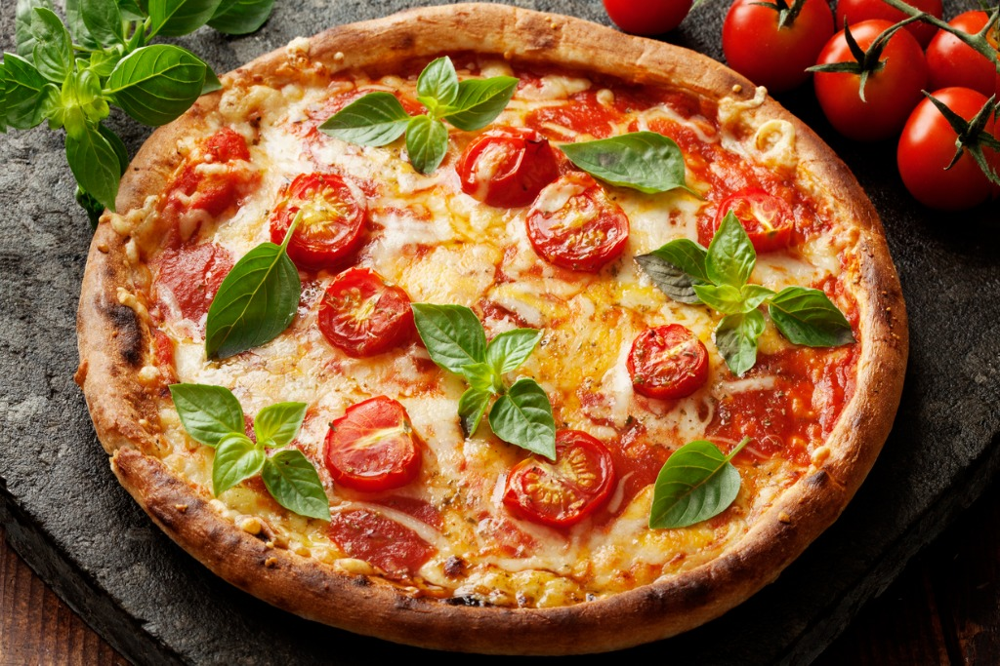
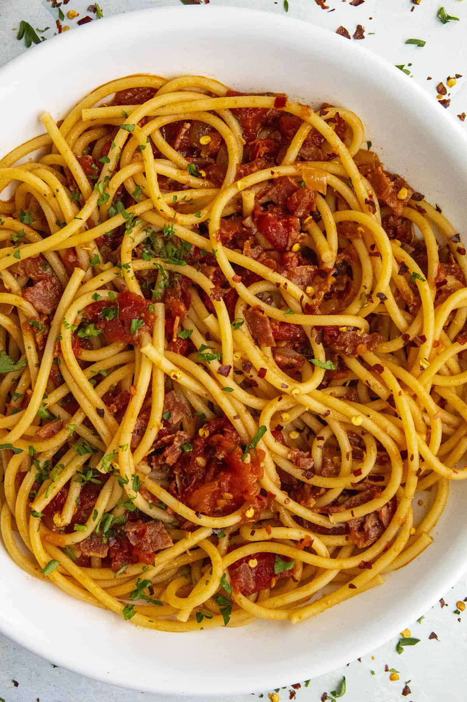

Ingredients
350g (12 oz) pasta,
1/3 cup olive oil,
4-5 garlic cloves, thinly sliced,
1 teaspoon red pepper flakes (adjust to taste),
Salt, to taste,
Freshly ground black pepper, to taste,
Fresh parsley, chopped, for garnish,
Grated Parmesan cheese (optional).
Cooking instructions
Bring a large pot of salted water to a boil.
Cook the pasta according to the package instructions until al dente.
Reserve about 1 cup of pasta cooking water before draining.
While the pasta is cooking, heat olive oil in a large pan over medium heat.
Add the sliced garlic and red pepper flakes to the oil.
Saute the garlic until it turns golden and aromatic, being careful not to burn it. Adjust the heat if needed.
Once the pasta is cooked, drain it and add it to the pan with the garlic oil.
Toss the pasta in the oil, ensuring it is well-coated.
If the pasta seems dry, add some of the reserved pasta cooking water to create a light sauce.
Season the dish with salt and freshly ground black pepper to taste.
Garnish with freshly chopped parsley for a burst of freshness.

Ingredients
Pizza Dough:
2 1/4 teaspoons (1 packet) active dry yeast,
1 teaspoon sugar,
3/4 cup warm water (around 110°F/43°C),
2 cups all-purpose flour,
1 teaspoon salt,
1 tablespoon olive oil
Pizza Toppings:
1/2 cup pizza sauce (store-bought or homemade),
1 1/2 cups fresh mozzarella cheese, sliced,
Fresh basil leaves,
Extra virgin olive oil,
Salt and pepper, to taste,
Cooking instructions
Prepare the Pizza Dough:
In a small bowl, combine the warm water, sugar, and active dry yeast. Let it sit for about 5-10 minutes until it becomes frothy.
In a large mixing bowl, combine the flour and salt. Make a well in the center and add the yeast mixture and olive oil.
Mix until a dough forms. Knead the dough on a floured surface for about 5-7 minutes until it becomes smooth.
Place the dough in a lightly oiled bowl, cover it with a damp cloth, and let it rise in a warm place for 1-1.5 hours or until it doubles in size.
Preheat your oven to the highest temperature it can go (usually around 475-500°F/245-260°C).
Punch down the risen dough and transfer it to a floured surface.
Roll or stretch the dough into your desired pizza shape (round or rectangular) and thickness.
Place the shaped dough on a pizza stone or a baking sheet.
Spread a thin layer of pizza sauce over the dough, leaving a small border around the edges.
Arrange sliced mozzarella evenly over the sauce.
Sprinkle with salt and pepper to taste.
Bake in the preheated oven for 10-15 minutes or until the crust is golden and the cheese is bubbly and slightly browned.
Remove the pizza from the oven and let it cool for a few minutes.
Drizzle with extra virgin olive oil and top with fresh basil leaves.

Ingredients
350g (12 oz) spaghetti,
2 tablespoons olive oil,
1 onion, finely chopped,
2 garlic cloves, minced,
400g (14 oz) canned crushed tomatoes,
1 teaspoon dried oregano,
1 teaspoon dried basil,
Salt and black pepper to taste,
Fresh basil or parsley for garnish,
Grated Parmesan cheese (optional).
Cooking instructions
Bring a large pot of salted water to a boil.
Cook the spaghetti according to the package instructions until al dente.
Reserve about 1 cup of pasta cooking water before draining.
In a large skillet, heat olive oil over medium heat.
Add the chopped onion and cook until softened.
Add minced garlic and cook for another 1-2 minutes until fragrant.
Pour in the crushed tomatoes, dried oregano, and dried basil.
Season with salt and black pepper to taste.
Simmer the sauce over low heat for about 15-20 minutes, stirring occasionally, to allow the flavors to meld.
Once the spaghetti is cooked, drain it and add it to the skillet with the tomato sauce.
Toss the spaghetti in the sauce until it's well-coated. If the sauce is too thick, add some of the reserved pasta cooking water to achieve your desired consistency.
Garnish with fresh basil or parsley.
Optionally, sprinkle with grated Parmesan cheese for added flavor.